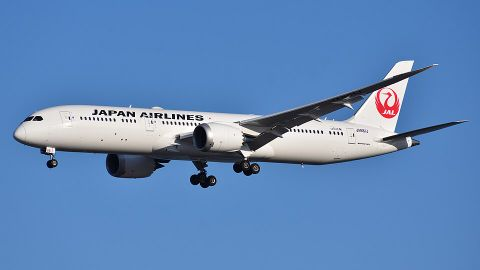

Empresa
Fundada el 1 de agosto de 1951. Alianza: oneworld (se unió en abril de 2007). Tripulantes de vuelo al 31 de marzo de 2026: 2,510 (solo Japan Airlines, sin contar a quienes están con permiso de ausencia). Base tras la formación: Haneda, Narita y otros aeropuertos.
- Aeronaves en servicio
- 234 aeronaves
- Rutas
- 211 rutas
- Edad promedio de la tripulación de vuelo
- 43.1 años
- Pasajeros anuales
- 46,242,888
Información de la empresa7 datos · Flota · Fuentes
- Fundación
- 1 de agosto de 1951
- Alianza
- oneworldse unió en abril de 2007
- Aeronaves en servicio
- 234 aeronavesTotal del Grupo JAL; incluye ZIPAIR Tokyo y Spring Japan, pero no Jetstar Japan · 31 de marzo de 2026
- Rutas
- 211 rutasRutas nacionales e internacionales del Grupo JAL en conjunto · 31 de marzo de 2026
- Tripulación de vuelo
- 2,510Solo Japan Airlines, sin contar a quienes están con permiso de ausencia · 31 de marzo de 2026
- Edad promedio de la tripulación de vuelo
- 43.1 añosAño fiscal 2025
- Pasajeros anuales
- 46,242,888pasajeros de pago de la aerolínea de servicio completo del Grupo JAL (internacionales y nacionales en conjunto) · año fiscal 2025
Flota13 tipos · 31 de marzo de 2026
- A350-90017 aeronaves
- A350-100011 aeronaves
- B787-922 aeronaves
- B787-831 aeronaves
- B777-300ER9 aeronaves
- B767-300ER27 aeronaves
- B737-80062 aeronaves
- A321ceo (carguero)3 aeronaves
- E17018 aeronaves
- E19014 aeronaves
- DHC-8-400 Cargo Combi5 aeronaves
- ATR 42-60013 aeronaves
- ATR 72-6002 aeronaves
FuentesJapan Airlines, “Perfil de la empresa”Japan Airlines, “Historia de JAL: la década de 2000”Japan Airlines, “Número de aeronaves”Japan Airlines, “Número de rutas”“Informe de seguridad del Grupo JAL, año fiscal 2025”Japan Airlines, “JAL Group ESG Data”Japan Airlines, Informe anual de valores del 77.º ejercicio fiscal (abril de 2025 – marzo de 2026)